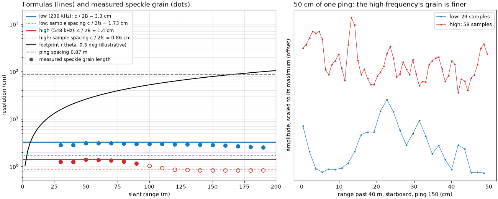
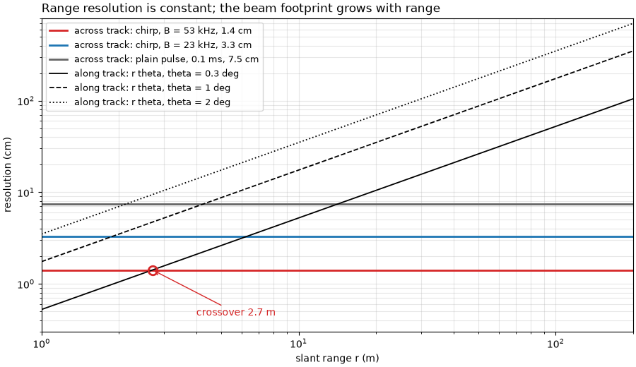
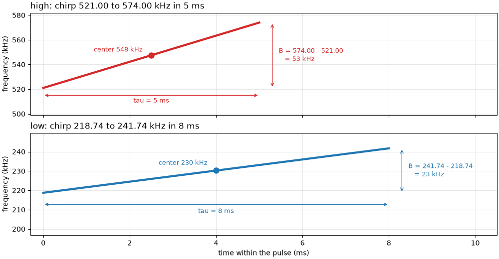
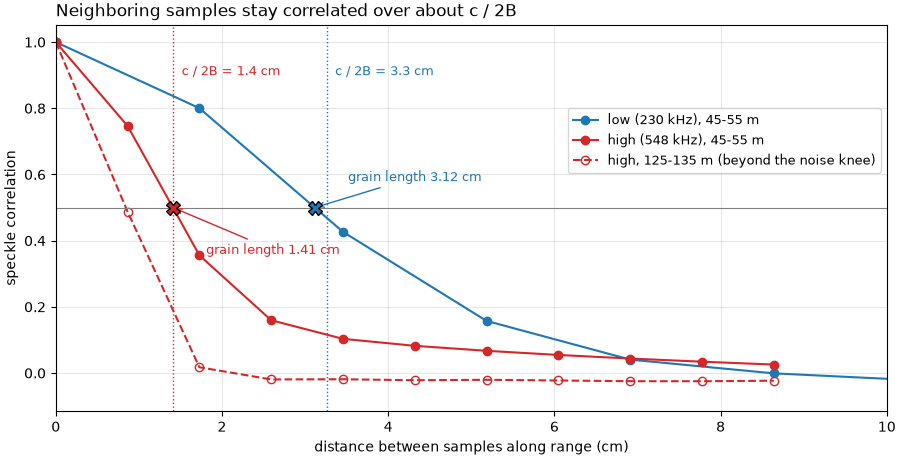
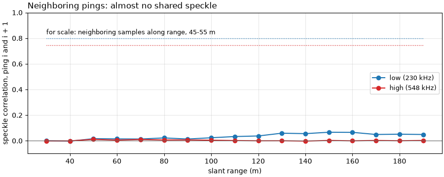
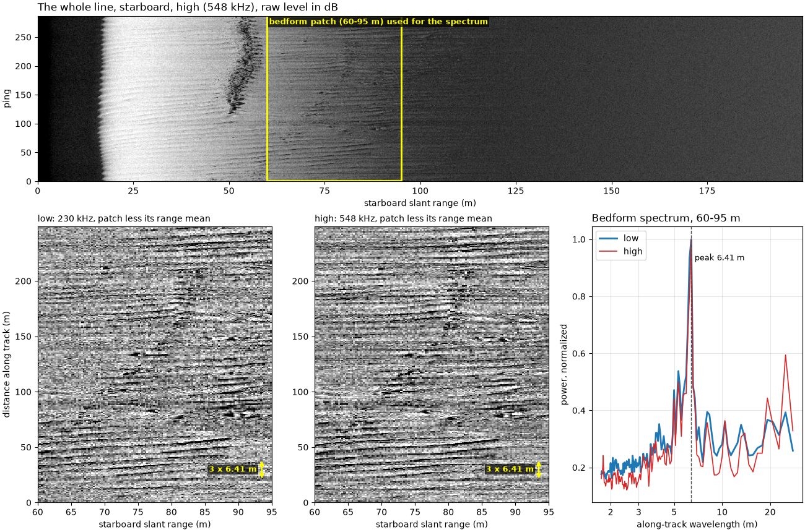
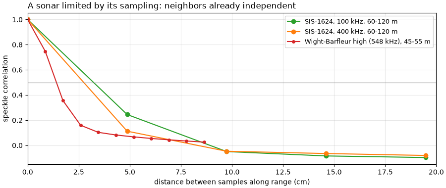

Note
Go to the end to download the full example code.
Frequency, range and resolution#

A higher frequency shows finer detail but reaches less far, because seawater absorbs sound more strongly the higher the frequency (How far a sidescan sees plots the absorption curve). How fine the detail is depends on two different things, one for each direction.
Across track (along the range axis) two echoes are told apart when
they arrive further apart in time than the pulse is long. For a plain
pulse of length tau seconds, and sound speed c, the range
resolution is
A chirp sweeps its frequency over a bandwidth B during the pulse.
After the receiver correlates the echo with the transmitted sweep
(matched filtering), the long pulse is compressed and the resolution
depends on the bandwidth only:
Neither depends on range: the range resolution is the same near and far.
Along track the sonar cannot separate two points that sit inside the
same beam. A beam with horizontal width theta (in radians) is
r theta wide at slant range r, so the along-track footprint
grows with range, and far range is blurred along track. The two are
equal at the crossover range r = delta_r / theta.
Sample spacing is not resolution. The recorder samples the echo at
fs samples per second, one sample every
of slant range. Sampling finer than delta_r only draws the same
blur with more points; sampling coarser throws detail away. The coarser
of the two limits the image.
Sidescans for long range typically run at 100 to 500 kHz; sonars at 600 kHz to about 1.8 MHz reach tens of meters with centimeter detail. Many towfish record two frequencies at once, as on the line used here.
Data: JNCC Wight-Barfleur Reef, EdgeTech JSF, and JNCC mid-Irish Sea, Benthos SIS-1624 XTF, Open Government Licence v3.0 (see Example data).
Usage: python examples/theory/plot_frequency_and_resolution.py [output_dir]
# 2026 rshomberg@uri.edu
import sys
from pathlib import Path
import matplotlib.pyplot as plt
import numpy as np
from matplotlib.patches import Rectangle
from scipy.ndimage import uniform_filter1d
from sidescanpy import datasets
from sidescanpy.io import read_and_convert
from sidescanpy.io.xtf.reader import read_xtf_header
from sidescanpy.log import configure_logging
from sidescanpy.processing.radiometric import center_frequency_hz
out = Path(sys.argv[1]) if len(sys.argv) > 1 else Path(".")
out.mkdir(parents=True, exist_ok=True)
configure_logging("ERROR")
# The JSF file records no sound velocity; ranges use 1500 m/s, the value
# the recorder wrote into its XTF copy of the same pings.
C = 1500.0
Resolution against range#
The two formulas against slant range, for the two chirps of the line below (bandwidths 23 and 53 kHz, read from the file in the next step), a 0.1 ms plain pulse for comparison, and three horizontal beam widths. The beam widths are illustrative. Where a rising line crosses a flat one, the along-track footprint becomes the coarser of the two.
r = np.logspace(0, np.log10(200), 200)
across = {"chirp, B = 53 kHz": C / (2 * 53e3), "chirp, B = 23 kHz": C / (2 * 23e3),
"plain pulse, 0.1 ms": C * 1e-4 / 2}
fig, ax = plt.subplots(figsize=(9, 5.2), constrained_layout=True)
for (label, dr), colour in zip(across.items(), ("C3", "C0", "0.4")):
ax.axhline(100 * dr, color=colour, lw=2, label=f"across track: {label}, {100 * dr:.1f} cm")
for theta_deg, ls in ((0.3, "-"), (1.0, "--"), (2.0, ":")):
ax.plot(r, 100 * r * np.radians(theta_deg), color="k", ls=ls, lw=1.3,
label=f"along track: r theta, theta = {theta_deg:g} deg")
dr_hf, theta = across["chirp, B = 53 kHz"], np.radians(0.3)
ax.plot(dr_hf / theta, 100 * dr_hf, "o", color="C3", ms=9, mfc="none", mew=2)
ax.annotate(f"crossover {dr_hf / theta:.1f} m", (dr_hf / theta, 100 * dr_hf), xytext=(4, 0.45),
textcoords="data", arrowprops=dict(arrowstyle="->", color="C3"), color="C3")
ax.set_xscale("log")
ax.set_yscale("log")
ax.set_xlim(1, 200)
ax.set_ylim(0.3, 800)
ax.set_xlabel("slant range r (m)")
ax.set_ylabel("resolution (cm)")
ax.set_title("Range resolution is constant; the beam footprint grows with range", loc="left")
ax.grid(alpha=0.3, which="both")
ax.legend(loc="upper left", fontsize=9)
fig.savefig(out / "frequency_and_resolution_theory.png", dpi=150)
print(f"crossover for B = 53 kHz and theta = 0.3 deg: {100 * dr_hf:.2f} cm / {theta:.5f} rad = {dr_hf / theta:.1f} m")

crossover for B = 53 kHz and theta = 0.3 deg: 1.42 cm / 0.00524 rad = 2.7 m
The line and its pulses#
The towfish recorded a low and a high frequency on every ping, each a
chirp. The JSF file stores the start and end of each sweep and its
length; their difference is the bandwidth. The low frequency sweeps
218.74 to 241.74 kHz, center 230 kHz; the high one 521 to 574 kHz,
center 548 kHz. The sidescanpy frequency keys name the start of each
sweep (hz_218740 and hz_521000), and
center_frequency_hz() gives
the center, which titles and labels below use. The first ping is
incomplete and is dropped. The figure draws the two sweeps as the file
records them: frequency against time within the pulse.
survey = read_and_convert([datasets.fetch("jncc_wight_barfleur_20130321174522.jsf")], fmt="jsf")
lines = {}
for key, name in zip(survey.frequencies, ("low", "high")):
ds = survey.get_frequency(key).dataset.load()
ds = ds.isel(ping=np.isfinite(ds["backscatter_intensity"].values).all(axis=(1, 2)))
a = ds.attrs
bandwidth = a["freq_hz_end"] - a["freq_hz_start"]
tau = a["pulse_length_us"] * 1e-6
lines[name] = dict(key=key, amp=ds["backscatter_intensity"].values.astype(np.float64),
spacing=C / (2 * a["sample_rate_hz"]), resolution=C / (2 * bandwidth),
center=center_frequency_hz(ds), ds=ds)
print(f"{name} ({key}): chirp {a['freq_hz_start'] / 1e3:.2f} to {a['freq_hz_end'] / 1e3:.2f} kHz, center "
f"{center_frequency_hz(ds) / 1e3:.2f} kHz, bandwidth B = {bandwidth / 1e3:.0f} kHz, pulse {1e3 * tau:.0f} ms")
print(f" c / (2B) = {C:.0f} / (2 x {bandwidth:.0f}) = {100 * C / (2 * bandwidth):.2f} cm; "
f"sample spacing c / (2 fs) = {C:.0f} / (2 x {a['sample_rate_hz']:.0f}) = "
f"{100 * C / (2 * a['sample_rate_hz']):.2f} cm; the same pulse uncompressed: c tau / 2 = "
f"{C * tau / 2:.2f} m")
fig, chirp_axes = plt.subplots(2, 1, figsize=(10, 5.2), sharex=True, constrained_layout=True)
for ax, name, colour in zip(chirp_axes, ("high", "low"), ("C3", "C0")):
a = lines[name]["ds"].attrs
f0, f1, tau_ms = a["freq_hz_start"] / 1e3, a["freq_hz_end"] / 1e3, a["pulse_length_us"] / 1e3
fc = (f0 + f1) / 2
ax.plot([0, tau_ms], [f0, f1], color=colour, lw=3)
ax.plot(tau_ms / 2, fc, "o", color=colour, ms=8)
ax.text(tau_ms / 2 - 0.2, fc + 3, f"center {fc:.0f} kHz", color=colour, fontsize=9, ha="right")
ax.annotate("", (tau_ms + 0.3, f1), (tau_ms + 0.3, f0), arrowprops=dict(arrowstyle="<->", color=colour))
ax.text(tau_ms + 0.45, fc, f"B = {f1:.2f} - {f0:.2f}\n = {f1 - f0:.0f} kHz", color=colour, fontsize=9,
va="center")
ax.annotate("", (tau_ms, f0 - 6), (0, f0 - 6), arrowprops=dict(arrowstyle="<->", color=colour))
ax.text(tau_ms / 2, f0 - 8, f"tau = {tau_ms:.0f} ms", color=colour, fontsize=9, ha="center", va="top")
ax.set_ylim(f0 - 22, f1 + 8)
ax.set_ylabel("frequency (kHz)")
ax.set_title(f"{name}: chirp {f0:.2f} to {f1:.2f} kHz in {tau_ms:.0f} ms", loc="left")
ax.grid(alpha=0.3)
chirp_axes[1].set_xlim(-0.3, 10.5)
chirp_axes[1].set_xlabel("time within the pulse (ms)")
fig.savefig(out / "frequency_and_resolution_chirps.png", dpi=150)

low (hz_218740): chirp 218.74 to 241.74 kHz, center 230.24 kHz, bandwidth B = 23 kHz, pulse 8 ms
c / (2B) = 1500 / (2 x 23000) = 3.26 cm; sample spacing c / (2 fs) = 1500 / (2 x 43403) = 1.73 cm; the same pulse uncompressed: c tau / 2 = 6.00 m
high (hz_521000): chirp 521.00 to 574.00 kHz, center 547.50 kHz, bandwidth B = 53 kHz, pulse 5 ms
c / (2B) = 1500 / (2 x 53000) = 1.42 cm; sample spacing c / (2 fs) = 1500 / (2 x 86806) = 0.86 cm; the same pulse uncompressed: c tau / 2 = 3.75 m
The JSF file records no beam width. The XTF copies of the same pings, written by the recorder, hold a horizontal beam angle in their file header, a configured value rather than a measurement:
for suffix, name in (("L", "low"), ("H", "high")):
info = read_xtf_header(datasets.fetch(f"jncc_wight_barfleur_20130321174522{suffix}.xtf")).chan_info
print(f"{name}: XTF header horizontal beam angle {info['HorizBeamAngle'][0]:.1f} deg, "
f"frequency {info['Frequency'][0]:.2f} kHz")
THETA_HEADER = np.radians(0.3)
low: XTF header horizontal beam angle 0.3 deg, frequency 230.24 kHz
high: XTF header horizontal beam angle 0.3 deg, frequency 547.50 kHz
The towfish moves between pings, so along track the image is sampled once per ping. The navigation is held between fixes (few distinct positions), so the ping spacing comes from the straight-line distance over the whole line.
ds = lines["high"]["ds"]
lat, lon = ds["latitude"].values, ds["longitude"].values
seconds = (ds["time"].values - ds["time"].values[0]) / np.timedelta64(1, "s")
distance = np.hypot((lat[-1] - lat[0]) * 111_320, (lon[-1] - lon[0]) * 111_320 * np.cos(np.radians(lat[0])))
DX = distance / (ds.sizes["ping"] - 1)
print(f"{len(np.unique(lat))} distinct positions in {ds.sizes['ping']} pings; {distance:.0f} m in {seconds[-1]:.1f} s "
f"= {distance / seconds[-1]:.2f} m/s; ping spacing {DX:.2f} m")
print(f"footprint r theta with the header's 0.3 deg: {50 * THETA_HEADER:.2f} m at 50 m, {100 * THETA_HEADER:.2f} m at "
f"100 m; equal to the ping spacing at {DX / THETA_HEADER:.0f} m")
21 distinct positions in 287 pings; 249 m in 80.5 s = 3.09 m/s; ping spacing 0.87 m
footprint r theta with the header's 0.3 deg: 0.26 m at 50 m, 0.52 m at 100 m; equal to the ping spacing at 166 m
Measuring the range resolution#
Speckle, the grainy texture of any sidescan image, has a grain size set
by the resolution cell: two samples closer than delta_r see mostly
the same scatterers and so carry similar values. The correlation of
each sample with its neighbors along range therefore measures the
resolution. Each 10 m stretch of range is divided by its 1 m running
mean (removing the seabed’s slow changes and the fall of level with
range), and the correlation is computed between samples k apart.
The grain length below is the distance at which the correlation falls
to 0.5.
def speckle(amp, spacing, r0, r1):
"""Speckle fluctuation in [r0, r1) m: amplitude over its 1 m running mean, minus 1."""
rng = np.arange(amp.shape[-1]) * spacing
x = amp[..., (rng >= r0) & (rng < r1)]
x = x / uniform_filter1d(x, max(3, int(round(1.0 / spacing))), axis=-1) - 1.0
return x - x.mean(axis=-1, keepdims=True)
def range_correlation(x, max_lag=10):
"""Correlation of samples ``k`` apart along range, k = 0 .. max_lag."""
return np.array([np.mean(x[..., : x.shape[-1] - k] * x[..., k:]) for k in range(max_lag + 1)]) / np.mean(x * x)
def grain_length(corr, spacing):
"""Distance at which the correlation first falls to 0.5 (linear interpolation)."""
k = int(np.argmax(corr < 0.5))
return spacing * ((k - 1) + (corr[k - 1] - 0.5) / (corr[k - 1] - corr[k]))
starts = np.arange(25, 195, 10)
for name in ("low", "high"):
p = lines[name]
corr = [range_correlation(speckle(p["amp"], p["spacing"], r0, r0 + 10)) for r0 in starts]
p["grain"] = np.array([grain_length(c, p["spacing"]) for c in corr])
p["corr_40"] = corr[list(starts).index(45)]
p["corr_125"] = corr[list(starts).index(125)]
p["adjacent"] = np.array([np.mean((x := speckle(p["amp"], p["spacing"], r0, r0 + 10))[:-1] * x[1:]) /
np.mean(x * x) for r0 in starts])
print(f"{name}: grain length (cm) at "
+ ", ".join(f"{r0 + 5:.0f} m {100 * g:.2f}" for r0, g in zip(starts, p["grain"])))
print(f" 45-55 m: correlation of neighboring samples {p['corr_40'][1]:.2f}, two apart {p['corr_40'][2]:.2f}; "
f"125-135 m: {p['corr_125'][1]:.2f} and {p['corr_125'][2]:.2f}")
seabed = starts + 5 < (95 if name == "high" else 200)
print(f" median grain length where the echo is above the noise: {100 * np.median(p['grain'][seabed]):.2f} cm, "
f"against c / (2B) = {100 * p['resolution']:.2f} cm and sample spacing {100 * p['spacing']:.2f} cm")
ratio = np.median(lines["low"]["grain"]) / np.median(lines["high"]["grain"][starts + 5 < 95])
print(f"grain length ratio low / high: {ratio:.2f}; bandwidth ratio 53 / 23 = {53 / 23:.2f}")
fig, ax = plt.subplots(figsize=(9, 4.6), constrained_layout=True)
for name, colour in (("low", "C0"), ("high", "C3")):
p = lines[name]
lag_cm = 100 * p["spacing"] * np.arange(len(p["corr_40"]))
ax.plot(lag_cm, p["corr_40"], "o-", color=colour, label=f"{name} ({p['center'] / 1e3:.0f} kHz), 45-55 m")
if name == "high":
ax.plot(lag_cm, p["corr_125"], "o--", color=colour, mfc="none",
label="high, 125-135 m (beyond the noise knee)")
g40 = grain_length(p["corr_40"], p["spacing"])
ax.plot(100 * g40, 0.5, "X", color=colour, ms=10, mec="k", zorder=5)
ax.annotate(f"grain length {100 * g40:.2f} cm", (100 * g40, 0.5), (100 * g40 + 0.4, 0.58 if name == "low" else 0.36),
color=colour, fontsize=9, arrowprops=dict(arrowstyle="->", color=colour))
ax.axvline(100 * p["resolution"], color=colour, lw=1, ls=":")
ax.text(100 * p["resolution"] + 0.1, 0.9, f"c / 2B = {100 * p['resolution']:.1f} cm", color=colour, fontsize=9)
ax.axhline(0.5, color="0.5", lw=0.8)
ax.set_xlim(0, 10)
ax.set_xlabel("distance between samples along range (cm)")
ax.set_ylabel("speckle correlation")
ax.set_title("Neighboring samples stay correlated over about c / 2B", loc="left")
ax.grid(alpha=0.3)
ax.legend(loc="upper right", bbox_to_anchor=(1, 0.8), fontsize=9)
fig.savefig(out / "frequency_and_resolution_speckle.png", dpi=150)

low: grain length (cm) at 30 m 2.82, 40 m 2.84, 50 m 3.12, 60 m 3.07, 70 m 3.09, 80 m 3.03, 90 m 3.00, 100 m 3.00, 110 m 2.97, 120 m 2.95, 130 m 2.95, 140 m 2.88, 150 m 2.83, 160 m 2.76, 170 m 2.66, 180 m 2.59, 190 m 2.53
45-55 m: correlation of neighboring samples 0.80, two apart 0.43; 125-135 m: 0.78 and 0.38
median grain length where the echo is above the noise: 2.95 cm, against c / (2B) = 3.26 cm and sample spacing 1.73 cm
high: grain length (cm) at 30 m 1.24, 40 m 1.24, 50 m 1.41, 60 m 1.37, 70 m 1.34, 80 m 1.27, 90 m 1.16, 100 m 1.04, 110 m 0.93, 120 m 0.87, 130 m 0.84, 140 m 0.83, 150 m 0.83, 160 m 0.83, 170 m 0.82, 180 m 0.83, 190 m 0.83
45-55 m: correlation of neighboring samples 0.75, two apart 0.36; 125-135 m: 0.49 and 0.02
median grain length where the echo is above the noise: 1.27 cm, against c / (2B) = 1.42 cm and sample spacing 0.86 cm
grain length ratio low / high: 2.32; bandwidth ratio 53 / 23 = 2.30
Along track: does each ping see new seabed?#
If the beam footprint were wider than the ping spacing, neighboring
pings would overlap on the seabed and their speckle would correlate.
The same correlation, now between ping i and ping i + 1 at the
same range:
for name in ("low", "high"):
p = lines[name]
print(f"{name}: neighboring-ping correlation "
+ ", ".join(f"{r0 + 5:.0f} m {c:.3f}" for r0, c in zip(starts[::3], p["adjacent"][::3])))
fig, ax = plt.subplots(figsize=(9, 3.6), constrained_layout=True)
for name, colour in (("low", "C0"), ("high", "C3")):
p = lines[name]
ax.plot(starts + 5, p["adjacent"], "o-", color=colour, label=f"{name} ({p['center'] / 1e3:.0f} kHz)")
ax.plot(starts + 5, p["corr_40"][1] * np.ones_like(starts, dtype=float), ls=":", color=colour, lw=1)
ax.text(30, lines["low"]["corr_40"][1] + 0.03, "for scale: neighboring samples along range, 45-55 m", fontsize=9)
ax.axhline(0, color="0.4", lw=0.8)
ax.set_ylim(-0.1, 1)
ax.set_xlabel("slant range (m)")
ax.set_ylabel("speckle correlation, ping i and i + 1")
ax.set_title("Neighboring pings: almost no shared speckle", loc="left")
ax.grid(alpha=0.3)
ax.legend(loc="center right", fontsize=9)
fig.savefig(out / "frequency_and_resolution_along_track.png", dpi=150)

low: neighboring-ping correlation 30 m -0.000, 60 m 0.014, 90 m 0.013, 120 m 0.037, 150 m 0.066, 180 m 0.051
high: neighboring-ping correlation 30 m -0.001, 60 m 0.005, 90 m 0.007, 120 m -0.000, 150 m 0.003, 180 m 0.000
The same patch at both frequencies#
Starboard, 60 to 95 m, all pings. Each image is the raw level in dB, averaged into 0.25 m range cells, less its mean at each range, which removes the fall of level with range and leaves only the seabed’s pattern. The bedforms run across the track, so their wavelength shows along track: the along-track power spectrum, averaged over 0.25 m range cells, has its peak at the bedform wavelength.
STARBOARD, R0, R1, CELL = 1, 60.0, 95.0, 0.25
patches, spectra, spectra_peak = {}, {}, {}
for name in ("low", "high"):
p = lines[name]
n = int(round(CELL / p["spacing"]))
i0 = int(R0 / p["spacing"])
cells = int((R1 - R0) / CELL)
raw = p["amp"][:, STARBOARD, i0: i0 + n * cells]
binned = 20 * np.log10(raw.reshape(raw.shape[0], cells, n).mean(axis=2))
binned -= binned.mean(axis=0)
patches[name] = binned
window = np.hanning(binned.shape[0])[:, None]
power = (np.abs(np.fft.rfft(binned * window, axis=0)) ** 2).mean(axis=1)
k = np.fft.rfftfreq(binned.shape[0], DX)
keep = k > 1 / 30
spectra[name] = (k[keep], power[keep] / power[keep].max())
peak = k[keep][np.argmax(power[keep])]
spectra_peak[name] = peak
print(f"{name}: along-track spectrum peaks at {peak:.4f} cycles/m, a wavelength of {1 / peak:.2f} m "
f"({1 / peak / DX:.1f} pings); spread of the 0.25 m cells {binned.std():.2f} dB, "
f"{CELL / p['resolution']:.0f} resolution cells of c / 2B per 0.25 m")
fig = plt.figure(figsize=(13, 8.6), constrained_layout=True)
grid = fig.add_gridspec(2, 3, height_ratios=[0.75, 1.25], width_ratios=[1, 1, 0.9])
ax_ctx = fig.add_subplot(grid[0, :])
axes = [fig.add_subplot(grid[1, k]) for k in range(3)]
p = lines["high"]
n8 = int(round(0.1 / p["spacing"]))
keep = (p["amp"].shape[-1] // n8) * n8
ctx = 20 * np.log10(p["amp"][:, STARBOARD, :keep].reshape(p["amp"].shape[0], -1, n8).mean(axis=2) + 1e-3)
ax_ctx.imshow(ctx, cmap="gray", vmin=np.percentile(ctx, 2), vmax=np.percentile(ctx, 99.5), origin="lower",
aspect="auto", extent=[0, keep * p["spacing"], 0, ctx.shape[0]])
ax_ctx.add_patch(Rectangle((R0, 1), R1 - R0, ctx.shape[0] - 2, fill=False, ec="yellow", lw=2))
ax_ctx.text(R0 + 0.5, ctx.shape[0] - 4, "bedform patch (60-95 m) used for the spectrum", color="yellow", fontsize=9,
fontweight="bold", va="top", bbox=dict(boxstyle="square,pad=0.15", fc="black", ec="none", alpha=0.7))
ax_ctx.set_xlabel("starboard slant range (m)")
ax_ctx.set_ylabel("ping")
ax_ctx.set_title(f"The whole line, starboard, high ({p['center'] / 1e3:.0f} kHz), raw level in dB", loc="left")
along = np.array([0, DX * (patches["low"].shape[0] - 1)])
for ax, name in zip(axes[:2], ("low", "high")):
img = patches[name]
lo, hi = np.percentile(img, [2, 98])
ax.imshow(img, cmap="gray", vmin=lo, vmax=hi, origin="lower", aspect="auto", interpolation="nearest",
extent=[R0, R1, along[0], along[1]])
ax.set_title(f"{name}: {lines[name]['center'] / 1e3:.0f} kHz, patch less its range mean", loc="left",
fontsize=10)
ax.set_xlabel("starboard slant range (m)")
wavelength = 1 / spectra_peak[name]
ax.annotate("", (R1 - 1.5, 20 + wavelength * 3), (R1 - 1.5, 20), arrowprops=dict(arrowstyle="<->", color="yellow",
lw=1.8))
ax.text(R1 - 2.2, 20 + wavelength * 1.5, f"3 x {wavelength:.2f} m", color="yellow", fontsize=9, ha="right",
va="center", fontweight="bold", bbox=dict(boxstyle="square,pad=0.15", fc="black", ec="none", alpha=0.7))
axes[0].set_ylabel("distance along track (m)")
for name, colour in (("low", "C0"), ("high", "C3")):
k, pw = spectra[name]
axes[2].semilogx(1 / k, pw, color=colour, lw=2 if name == "low" else 1.2, label=name)
axes[2].set_xticks([2, 3, 5, 10, 20], labels=["2", "3", "5", "10", "20"])
axes[2].set_xticks([], minor=True)
axes[2].set_xlabel("along-track wavelength (m)")
axes[2].set_ylabel("power, normalized")
axes[2].set_title("Bedform spectrum, 60-95 m", loc="left")
axes[2].grid(alpha=0.3, which="both")
axes[2].axvline(1 / spectra_peak["high"], color="0.3", lw=1, ls="--")
axes[2].text(1 / spectra_peak["high"] * 1.05, 0.95, f"peak {1 / spectra_peak['high']:.2f} m", fontsize=9, va="top")
axes[2].legend(loc="upper left")
fig.savefig(out / "frequency_and_resolution_patch.png", dpi=150)

low: along-track spectrum peaks at 0.1561 cycles/m, a wavelength of 6.41 m (7.4 pings); spread of the 0.25 m cells 3.58 dB, 8 resolution cells of c / 2B per 0.25 m
high: along-track spectrum peaks at 0.1561 cycles/m, a wavelength of 6.41 m (7.4 pings); spread of the 0.25 m cells 2.90 dB, 18 resolution cells of c / 2B per 0.25 m
A second sonar#
A Benthos SIS-1624 on the mid-Irish Sea line records 100 and 400 kHz into 4096 samples a ping. Its XTF stores neither bandwidth nor pulse length, so only the sampling can be read from the file; the speckle correlation shows which one limits.
irish = read_and_convert([datasets.fetch("jncc_mid_irish_sea_MIS15_2.xtf")], fmt="xtf")
fig, ax = plt.subplots(figsize=(9, 3.8), constrained_layout=True)
for key, colour in zip(irish.frequencies, ("C2", "C1")):
ds = irish.get_frequency(key).dataset.load()
c = float(np.nanmean(ds["sound_vel_ms"].values))
spacing = c / (2 * ds.attrs["sample_rate_hz"])
corr = range_correlation(speckle(ds["backscatter_intensity"].values.astype(np.float64), spacing, 60, 120), 4)
print(f"{key}: sample spacing {c:.0f} / (2 x {ds.attrs['sample_rate_hz']:.0f}) = {100 * spacing:.2f} cm; "
f"correlation of neighboring samples at 60-120 m: {corr[1]:.2f}")
ax.plot(100 * spacing * np.arange(len(corr)), corr, "o-", color=colour,
label=f"SIS-1624, {float(ds.attrs['freq_hz_start']) / 1e3:.0f} kHz, 60-120 m")
p = lines["high"]
ax.plot(100 * p["spacing"] * np.arange(len(p["corr_40"])), p["corr_40"], "o-", color="C3", ms=4,
label=f"Wight-Barfleur high ({p['center'] / 1e3:.0f} kHz), 45-55 m")
ax.axhline(0.5, color="0.5", lw=0.8)
ax.set_xlim(0, 20)
ax.set_xlabel("distance between samples along range (cm)")
ax.set_ylabel("speckle correlation")
ax.set_title("A sonar limited by its sampling: neighbors already independent", loc="left")
ax.grid(alpha=0.3)
ax.legend(fontsize=9)
fig.savefig(out / "frequency_and_resolution_second_sonar.png", dpi=150)

hz_100000: sample spacing 1500 / (2 x 15398) = 4.87 cm; correlation of neighboring samples at 60-120 m: 0.24
hz_400000: sample spacing 1500 / (2 x 15398) = 4.87 cm; correlation of neighboring samples at 60-120 m: 0.11
Resolution, measured#
Left: the formulas for this line, with the measured speckle grain length in each 10 m of range (dots; hollow where the high frequency has reached the noise floor, past about 95 m, see How far a sidescan sees), the ping spacing, and the footprint for the 0.3 deg in the XTF header (illustrative: not a measurement). Right: 50 cm of one ping at both frequencies, every sample marked.
fig, (ax_r, ax_p) = plt.subplots(1, 2, figsize=(13, 5.2), width_ratios=[1.25, 1], constrained_layout=True)
centres = starts + 5
for name, colour in (("low", "C0"), ("high", "C3")):
p = lines[name]
ax_r.axhline(100 * p["resolution"], color=colour, lw=2,
label=f"{name} ({p['center'] / 1e3:.0f} kHz): c / 2B = {100 * p['resolution']:.1f} cm")
ax_r.axhline(100 * p["spacing"], color=colour, lw=1, ls=":",
label=f"{name}: sample spacing c / 2fs = {100 * p['spacing']:.2f} cm")
seabed = centres < (95 if name == "high" else 200)
ax_r.plot(centres[seabed], 100 * p["grain"][seabed], "o", color=colour, ms=7)
ax_r.plot(centres[~seabed], 100 * p["grain"][~seabed], "o", color=colour, ms=7, mfc="none")
r_lin = np.linspace(2, 200, 100)
ax_r.plot(r_lin, 100 * r_lin * THETA_HEADER, color="k", lw=1.5, label="footprint r theta, 0.3 deg (illustrative)")
ax_r.axhline(100 * DX, color="0.45", lw=1.5, ls="--", label=f"ping spacing {DX:.2f} m")
ax_r.plot([], [], "o", color="0.3", label="measured speckle grain length")
ax_r.set_yscale("log")
ax_r.set_xlim(0, 200)
ax_r.set_ylim(0.5, 2000)
ax_r.set_xlabel("slant range (m)")
ax_r.set_ylabel("resolution (cm)")
ax_r.set_title("Formulas (lines) and measured speckle grain (dots)", loc="left")
ax_r.grid(alpha=0.3, which="both")
ax_r.legend(loc="upper left", fontsize=8.5, framealpha=0.95)
PING, START, SPAN = 150, 40.0, 0.5
for name, colour, shift in (("low", "C0", 0.0), ("high", "C3", 1.0)):
p = lines[name]
rng = np.arange(p["amp"].shape[-1]) * p["spacing"]
sel = (rng >= START) & (rng < START + SPAN)
trace = p["amp"][PING, STARBOARD, sel]
ax_p.plot(100 * (rng[sel] - START), trace / trace.max() + shift, ".-", color=colour, ms=4, lw=0.8,
label=f"{name}: {sel.sum()} samples")
ax_p.set_xlabel(f"range past {START:.0f} m, starboard, ping {PING} (cm)")
ax_p.set_ylabel("amplitude, scaled to its maximum (offset)")
ax_p.set_yticks([])
ax_p.set_title("50 cm of one ping: the high frequency's grain is finer", loc="left")
ax_p.legend(loc="upper right", fontsize=9)
fig.savefig(out / "frequency_and_resolution.png", dpi=150)
Reading the result#
Bandwidth sets the range resolution here, not the sampling. The
high frequency is a chirp from 521 to 574 kHz (center 548 kHz; the
sidescanpy key hz_521000 names the start of the sweep), 5 ms long.
Its bandwidth of 53 kHz gives c / 2B = 1500 / (2 x 53000) = 1.42 cm.
The low frequency sweeps 218.74 to 241.74 kHz (center 230 kHz), 23 kHz
in 8 ms, for 3.26 cm. Uncompressed, the same pulses would resolve only
3.75 m and 6.00 m: pulse compression makes them 264 and 184 times
finer. Both are sampled finer than they resolve (0.86 and
1.73 cm), so neighboring samples are not independent: their speckle
correlation is 0.75 (high) and 0.80 (low) at 45 to 55 m. The measured
grain length, a median 1.27 cm (high) and 2.95 cm (low) where the echo
is above the noise, sits just under c / 2B at both frequencies and
stays flat with range, as the formula says. Its ratio, 2.32, matches
the bandwidth ratio 53 / 23 = 2.30. Past about 100 m the high
frequency reaches its noise floor (How far a sidescan sees), and the
grain shrinks to 0.83 cm, the sample spacing: the noise changes more
from one sample to the next than the seabed echo does (correlation
0.49 at 125 to 135 m). The low frequency’s grain begins to
shrink the same way past about 150 m.
The mid-Irish Sea sonar is limited by its sampling. It stores 4096 samples per ping over 200 m, one every 4.87 cm at both 100 and 400 kHz, and its neighboring samples are nearly independent (0.24 and 0.11). Whatever its pulse could resolve, the file holds no detail finer than 4.87 cm.
Along track, the ping spacing limits this line, not the beam. The towfish moved 249 m in 80.5 s (3.09 m/s), one ping every 0.87 m. The JSF file records no beam width; the 0.3 deg in its XTF copies is a header setting, the same at both frequencies, so the footprint drawn with it is illustrative. With it the footprint would be 0.26 m at 50 m and 0.52 m at 100 m, smaller than the ping spacing out to 166 m. The data agree that neighboring pings see different seabed: their speckle correlation stays at or below 0.066 (low) and 0.007 (high) at every range. So the along-track detail is 0.87 m here, 60 times coarser than the high frequency’s range resolution. A slower tow or a faster ping rate would bring the beam back as the limit at far range.
Both frequencies resolve the bedforms. The bedforms on the starboard side have an along-track wavelength of 6.41 m at both frequencies, more than seven pings, far larger than either resolution cell. The high frequency draws them more cleanly (spread of the 0.25 m cells 2.90 dB against 3.58 dB at the low frequency) because each cell averages 18 resolution cells instead of 8, and averaging more independent speckle samples steadies the level. Its cost is range: the echo is gone by about 100 m, while the low frequency still has seabed at 200 m.
In sidescanpy: the converters keep freq_hz_start,
freq_hz_end and pulse_length_us where the format records them
(JSF does; XTF and SDF do not), and
center_frequency_hz() gives
the center of a chirp. When gridding, a cell size finer than the
coarser of c / 2B, the sample spacing and the ping spacing only
interpolates (Grid to a map).
How sidescan sees covers the geometry and
How far a sidescan sees the reach.
Total running time of the script: (0 minutes 6.758 seconds)